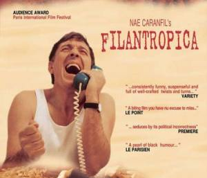

ilantropica, memorabilul film al lui Nae Caranfil, ne-a schimbat definitiv conceptia despre cererile de ajutor pe care le primim!
In film exista un personaj, Pepe, intruchipat magistral de regretatul George Dinica, care joaca rolul unui escroc ce se autointituleaza 'textier pentru cersetori' si care are o replica remarcabila: "Mâna întinsa care nu spune o Poveste… nu capata pomana!" link

Dupa ce am vazut acest film, nu am mai trimis nicio cerere de sponsorizare!
De asemenea, am inceput sa publicam cererile de ajutor, pentru a putea cerne Povestile si pe cei care le spun.
(*) Disclaimer: Cererile publicate apartin in totalitate persoanelor care ne contacteaza. Daca nu este mentionat altfel, nu verificam informatiile si nu ne asumam responsabilitatea pentru veracitatea cererii. Pentru detalii va rugam sa contactati direct beneficiarul. De ce publicam aceste informatii